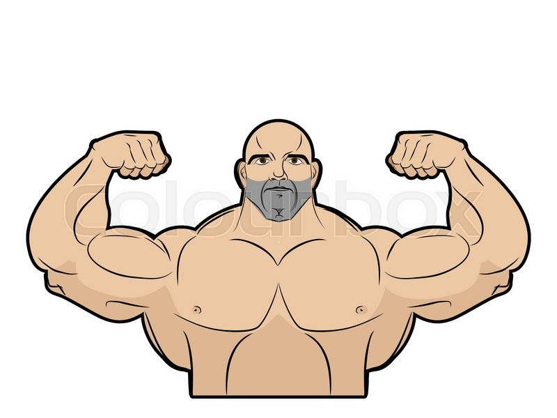

Velkommen til siden
Denne siden vil gi deg tilstrekkelig informasjon til å prestere på treningsenter på en helseforebyggende måte.
Det viktigste når du starter opp med trening er å gjøre seg kjent med øvelsene og holde seg relativt passiv når det kommer til å løfte tungt. Dette forhindrer skader og gjør at du bekjenner deg til øvelsen slik at måten den utføres på kommer naturlig.